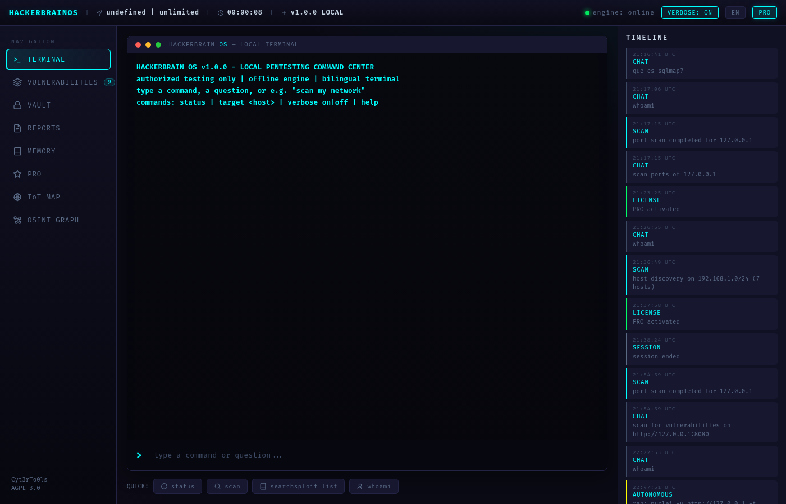
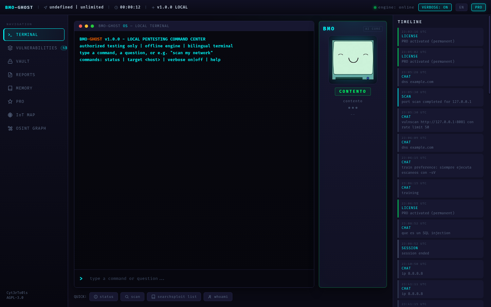
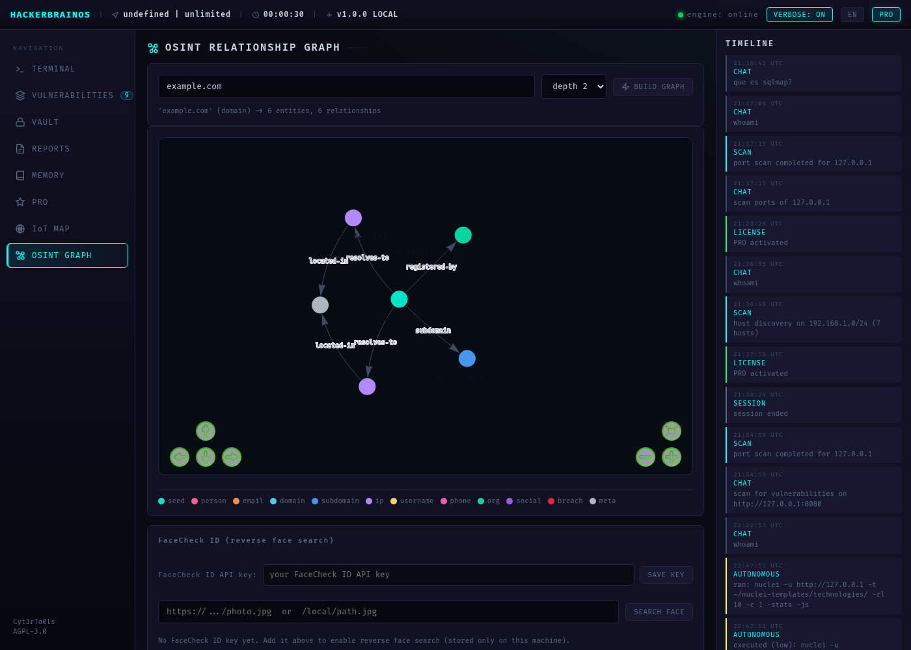
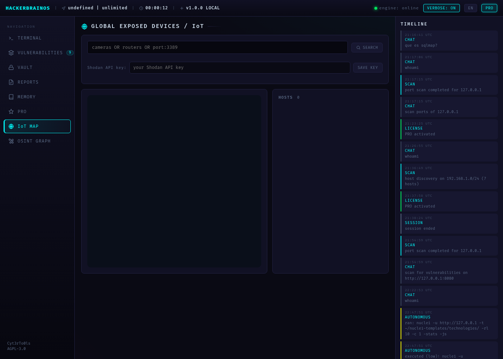
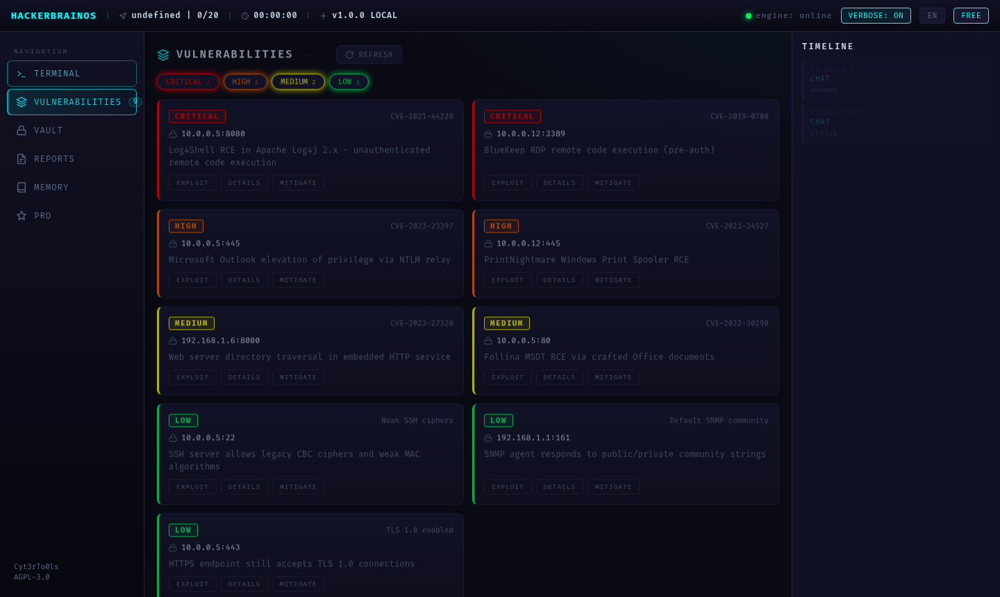
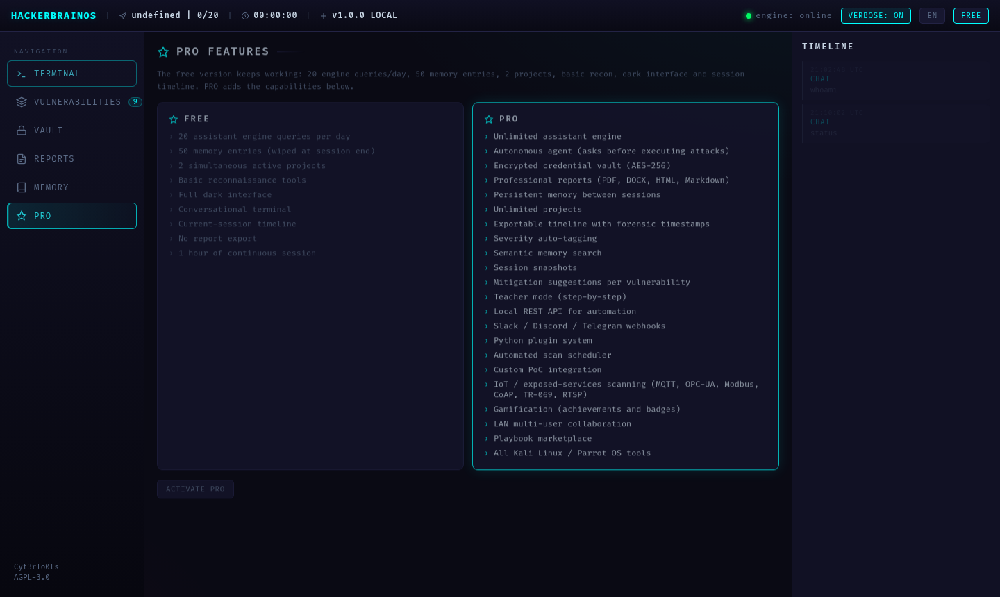

HackerBrain OS is a local AI-powered assistant for Kali / Parrot Linux. It connects to your own local models, detects your installed security tools, and automates reconnaissance, OSINT, vulnerability scanning, and bug bounty workflows — no cloud, no data leaves your computer.
HackerBrain OS orchestrates the tools already on your system and lets a local AI engine plan, execute and analyze engagements.
Ask in plain language (EN/ES): the agent plans steps with your local model, executes real commands, and iterates until the goal is reached.
Port, service, IoT and template-based vulnerability scans (Nmap, Nuclei, masscan) with severity classification and CVE correlation.
Identifies the web stack (frameworks, servers, WAFs) and summarizes the likely attack surface before you start.
Build ordered, color-coded relationship graphs from any email, domain, IP, username or phone — and map exposed devices worldwide on an interactive globe.
Credentials and findings stored with PBKDF2 + AES encryption. Nothing leaves your machine.
Full bilingual interface and tutorials. The assistant answers in the language you write in.
Native windowed version (pywebview) with one-command automatic installation, live progress bar and a full uninstaller.
Scans report estimated durations up front and throttle automatically (nuclei -rl, nmap --max-rate) when a target enforces limits.
Real captures of the interface running against live targets.






git clone https://github.com/Cyt3rTo0ls/hackerbrain-os.git
cd hackerbrain-os
./install.sh # creates venv, installs deps, initializes the DB
./install.sh run # start on http://127.0.0.1:8080Desktop version (native window, automatic setup with progress bar):
chmod +x hackerbrain-os-run.sh
./hackerbrain-os-run.sh # installs everything + opens the desktop app
./hackerbrain-os-run.sh --uninstall # removes it from your machine (keeps your data)data/config.yaml). The rest of the platform works without an engine, but conversational analysis needs one.
> escanea solo los dispositivos conectados a mi red
> scan ports of 10.10.10.1
> enumerate subdomains of example.com
> osint example.com
> graph alice@example.com
> shodan cameras port:554
> scan for vulnerabilities on http://127.0.0.1:8081 (tiene rate limit)
> dns example.com
> train preference: siempre usa -sVMINIMUM CENSORSHIP All professional tooling runs freely (iptables, ufw, dd, mkfs, exploit tooling). Only local host-wipe commands are blocked.
AGGRESSIVE MODE aggressive on skips the confirmation gate entirely for autonomous engagements (persistent).
100% LOCAL No telemetry, no cloud, no data exfiltration. Offline by design.
PRO is a permanent, single-use license. Activate once, keep it forever on that machine.